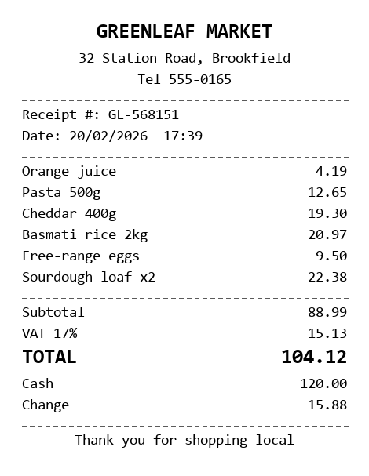
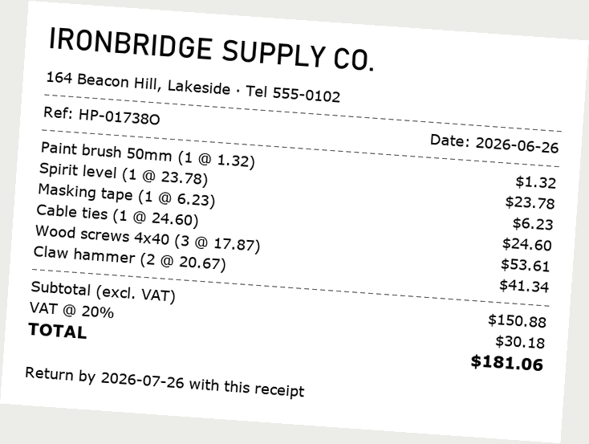
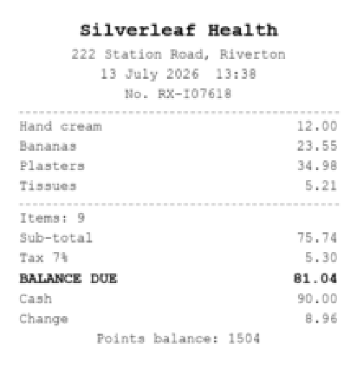
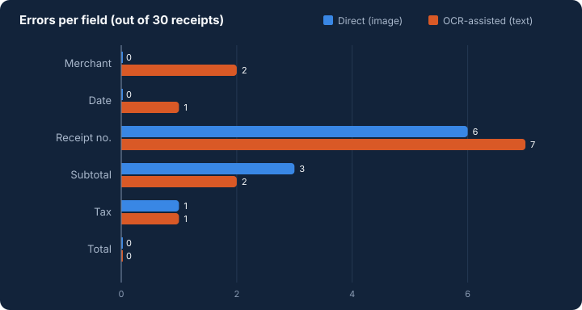
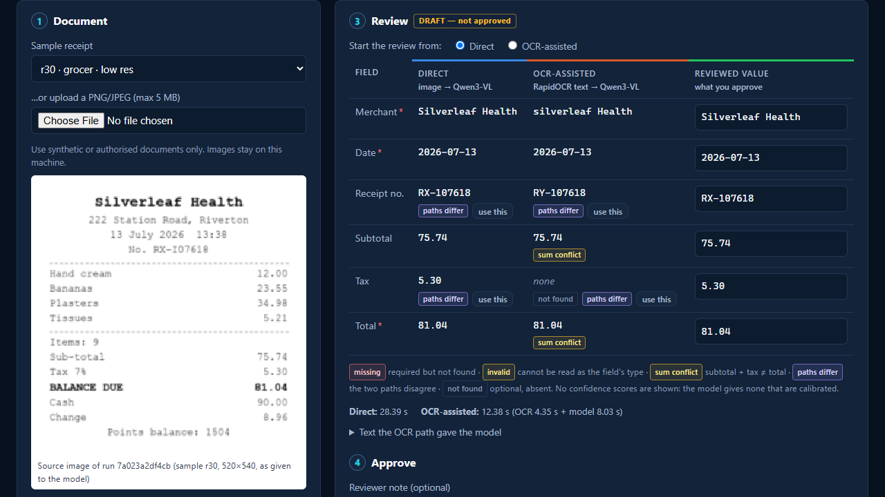
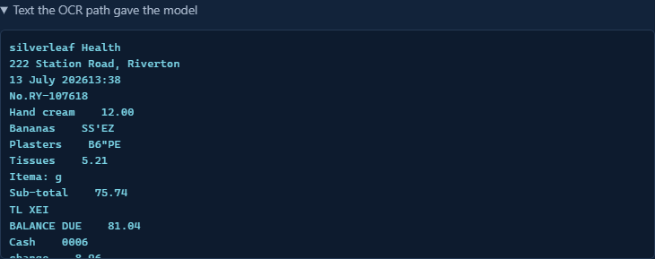
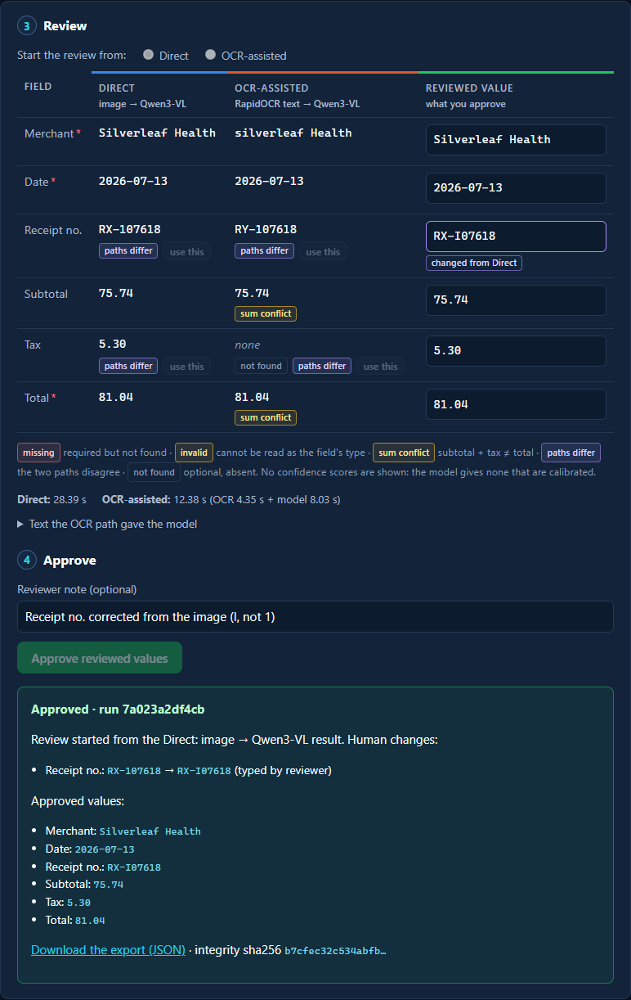

Look-alike characters
An ID like RX-I07618 becomes RX-107618. Both look plausible; nothing about the output says it is wrong.
Should a model read a receipt from the image, or from OCR text? This project runs both paths on one laptop — same local model, same fields, same scoring — measures where each one fails, and treats every result as a draft until a person approves it.
Three things, kept apart: the code (a local app and a two-path pipeline), the experiment (30 generated receipts, scored against their own ground truth), and this site, which summarises both. The experiment asks the question of a 2026 paper at laptop scale; it does not reproduce that paper.
A receipt image has to become a handful of fields a system can trust: merchant, date, receipt number, subtotal, tax, total. The hard cases are the ordinary ones.
An ID like RX-I07618 becomes RX-107618. Both look plausible; nothing about the output says it is wrong.
Cash tendered, change, savings and a "return by" date sit right beside the total and the purchase date.
Tilted photos, blur, JPEG noise, faded thermal paper, low resolution. Each hits the two paths differently.
The only difference between the paths is what the model is given. Everything after that is shared.
The validated image goes straight to a 4.4-billion-parameter vision-language model (Qwen3-VL 4B Instruct, 4-bit, Apache-2.0) served by Ollama on the laptop's integrated GPU. It returns the six fields as JSON, constrained by a schema.
RapidOCR (open PP-OCR models on ONNX Runtime, CPU) reads the image; its boxes are rebuilt into printed lines. Only that text goes to the same model, with the same instructions and schema.
Five layouts × six image conditions, generated with their ground truth. Rules, scoring and prompt were written down before the evaluation set was ever run; a separate dev set was used for debugging.



merchant · date · receipt no. · subtotal · tax · total — money compared to the cent, dates as ISO, IDs character by character.
model, instructions, JSON schema, temperature 0 and seed, normalisation, scoring. Only the input differs.
Two full runs gave identical values for all 360 predicted fields. Every model output and OCR text is saved in the repository.
180 field slots per path (30 receipts × 6 fields). Measured on an Intel Core Ultra 7 258V laptop, model on the Arc 140V iGPU.

TL XEI left the model nothing to extract; a garbled date became 2023-08-17.67.58 read as 667.58 — caught by the sum rule.| Field | Direct | OCR-assisted |
|---|---|---|
| Merchant | 30 / 0 / 0 / 0 | 28 / 2 / 0 / 0 |
| Date | 30 / 0 / 0 / 0 | 29 / 1 / 0 / 0 |
| Receipt no. | 24 / 6 / 0 / 0 | 23 / 7 / 0 / 0 |
| Subtotal | 27 / 1 / 0 / 2 | 28 / 0 / 0 / 2 |
| Tax | 29 / 1 / 0 / 0 | 29 / 0 / 1 / 0 |
| Total | 30 / 0 / 0 / 0 | 30 / 0 / 0 / 0 |
The app shows both drafts side by side, flags what it can justify, and records every human change next to what the models extracted.


TL XEI.
RX-I07618. The reviewer typed it; the export records the change and its source.The sum rule caught the direct path's digit misreads; running both paths turned 9 more errors into visible disagreements.
6 per path. When both paths make the same mistake — a look-alike ID, a subtotal copied from the total — nothing looks wrong. That is why a person approves.
Both drafts, the approved values, per-field provenance (direct, OCR or human), the reviewer note and a sha256 over the record.
Source receipt → both extraction paths → drafts with a visible error and a missing field → human correction and approval → exported result. The extraction is live inference on this laptop; the reviewer's clicks and typing are scripted.
2:50 · English narration (synthetic voice, Kokoro-82M) · captions burned in below the picture and available as a track · understandable muted. Music: "Airport Lounge" Kevin MacLeod (incompetech.com), licensed under Creative Commons: By Attribution 4.0, creativecommons.org/licenses/by/4.0 — excerpt, volume lowered and ducked under the narration, fades added.
Benchmarks multimodal LLMs on real business documents with OCR text only, image only, and both; finds image-only input can match OCR-enhanced input for powerful models. We borrow its question — and test two of its three settings with one small local model on synthetic receipts. Its datasets, models and results are not reproduced.
arxiv.org/abs/2603.02789 → Historical background · 2021 / ECCV 2022Argued that document understanding need not depend on a separate OCR stage, citing OCR's cost, inflexibility and error propagation, and read document images end to end. It motivates the direct path; we did not implement or run Donut.
arxiv.org/abs/2111.15664 →The third project in a series of local, evidence-first AI proofs of concept.